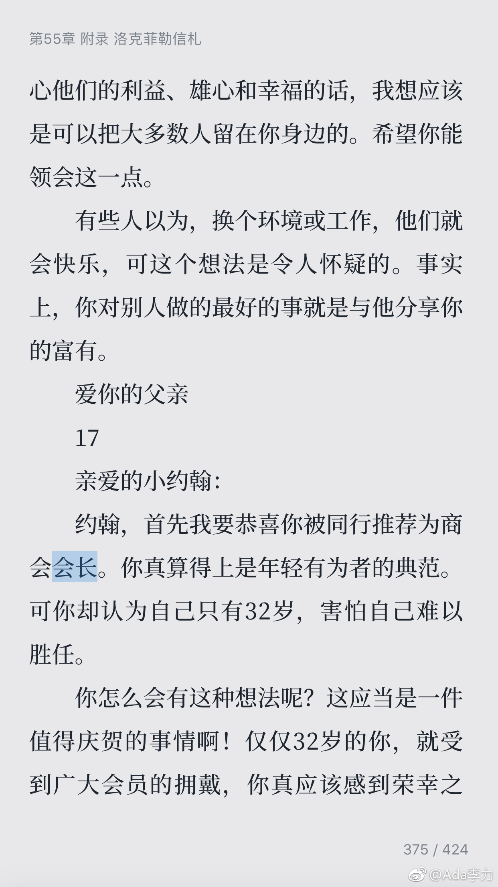
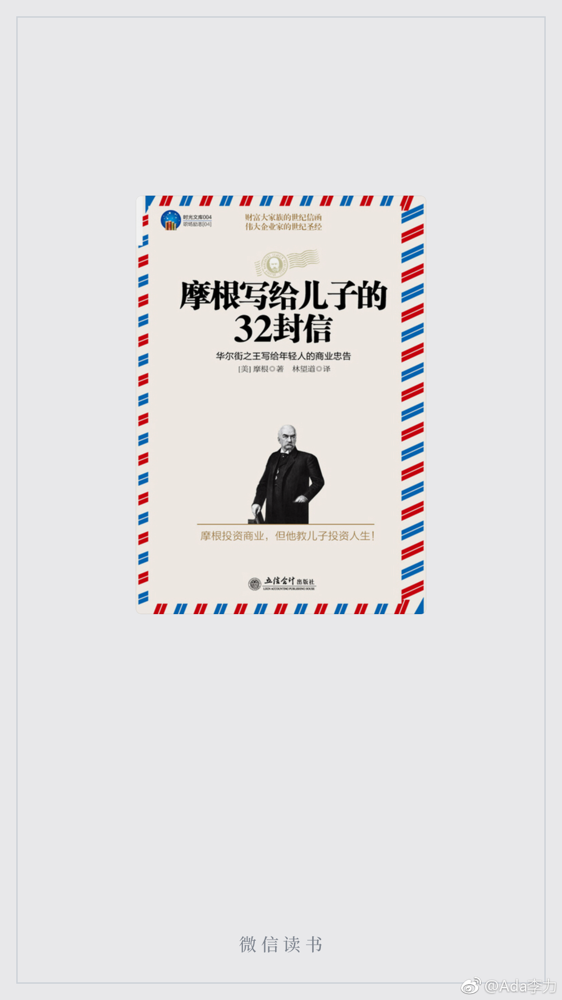
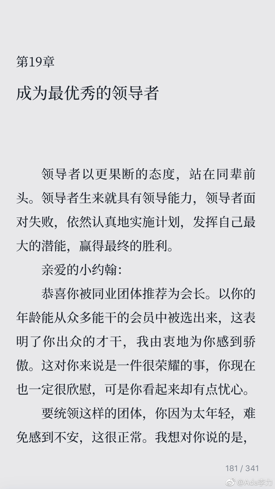

#读书# 看起来《摩根给儿子的32封信》又是本伪书，内容与洛克菲勒给儿子的信高度重叠。以后看书前还是先看下出版社，摩根这本伪装书是个叫立信会计出版社搞出来的。当两本书内容相似试，为什么不说《资本的秘密》是伪书呢？书读多了，就跟看人多了一样，真伪，性情，格局，审美等等，是能从文字中看出来的。
跟@西瓜大丸子汤 聊天，听他提到Alpha性格，于是搜了搜，很能解释幼时的行为了。据说这种内核是天生的。了解自己是个无止境的过程，当然也很有意思。 查看图片@Ada李力:小时候被评价过的性格缺陷：轴，犟，憨，我以为四十多年已足够消磨掉。最近越来越发觉，自己性格在回到小时候。人生大概确实有轮回。